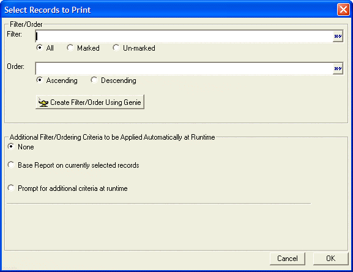
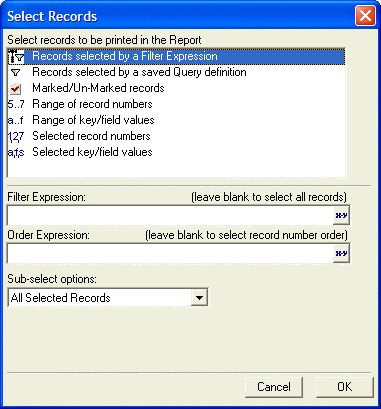

Specifying the Layout Filter
When using the Report, Label and Letter layout editors, you can click
the Select Records icon on the toolbar  to specify the filter and order expression to select the
records to be printed.
to specify the filter and order expression to select the
records to be printed.

Clicking Create Filter/Order Using Genie displays the Select Records dialog that lets you define filters that select ranges of records, ranges of key values, prompt for parameters at run time, and such.

See Also